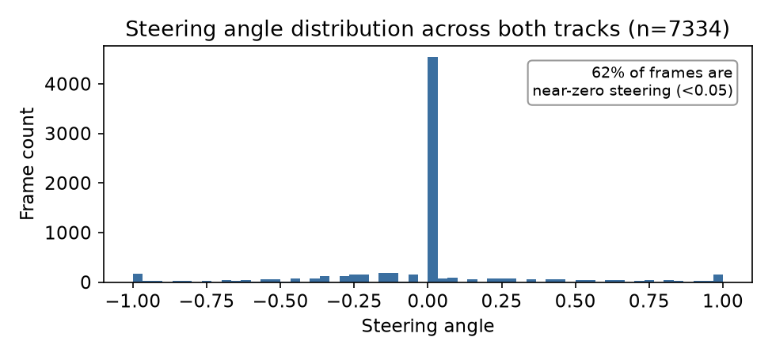
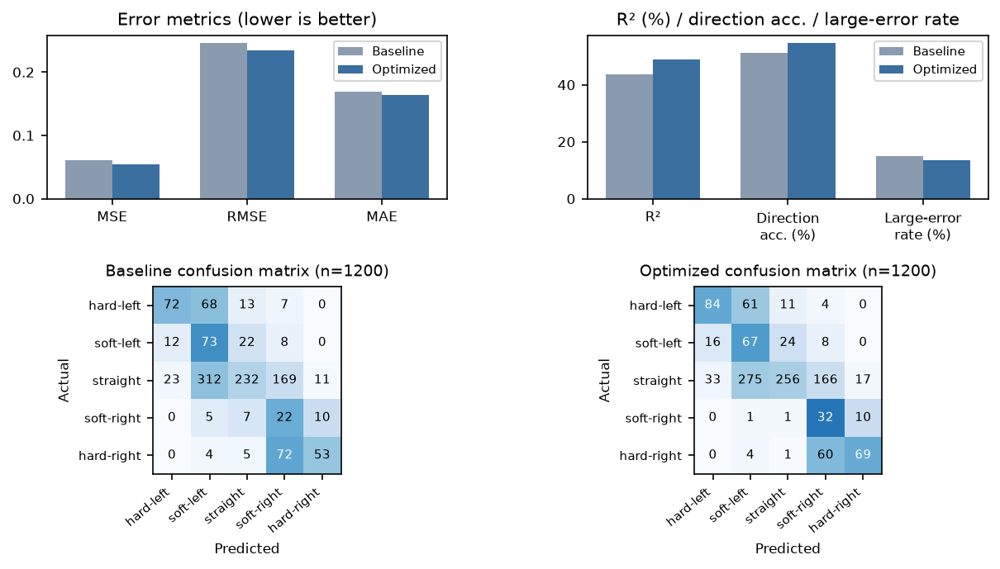

Munjalsinh Zala — SoSe24-ML, Exam 3, Own ML Project Report — August 2026
Abstract. This report develops, evaluates, and deploys a behavioral-cloning steering-angle predictor (PilotNet; Bojarski et al., 2016) for the Udacity Self-Driving Car Simulator. A from-scratch PilotNet trained on ~7,300 combined-track recordings is compared against a simpler baseline recipe using the identical architecture and data split; the optimized configuration — primarily a data-rebalancing strategy that treats real and synthetic training examples asymmetrically rather than just equalizing class counts — improves R² from 0.437 to 0.489 and direction accuracy from 51.2% to 54.6%, and drives the simulator successfully in closed loop. A side comparison against a pretrained ResNet18 backbone finds the compact, 287K-parameter, from-scratch model performs at least as well as an 11.2M-parameter pretrained alternative, evidence that model capacity is not the binding constraint on this dataset. The report concludes that the amount of genuinely diverse real training data, not the model or training recipe, is the ceiling on further improvement.
Behavioral cloning is a form of imitation learning in which a control policy is learned directly from demonstrations, without an explicit model of the environment's dynamics. In the context of autonomous driving, this means learning a mapping from raw camera pixels straight to a driving command — here, a steering angle — by observing a human operator's recorded driving behavior. This approach was popularized by Bojarski et al.'s 2016 NVIDIA paper, End to End Learning for Self-Driving Cars, which introduced the compact convolutional architecture ("PilotNet") used as the basis for this project.
The problem is relevant on several levels. Technically, end-to-end behavioral cloning replaces a hand-engineered perception→planning→control pipeline with a single learned function, data-efficient to prototype but raising hard questions about robustness and interpretability that this report investigates directly. Commercially, vision-based lane-keeping and steering-assist features are now standard in consumer ADAS, and behavioral cloning is an accessible way to prototype such policies without hand-labeled lane or object annotations. Socially, understanding where and why such models fail matters for public trust and regulatory scrutiny of vision-based driving systems — a theme this report returns to in Sections 5 and 6.
Concretely, this project trains a model to predict a continuous steering angle from a single front-facing camera frame in a simulated driving environment (the Udacity Self-Driving Car Simulator). Using a simulator rather than a real vehicle is itself a relevant methodological choice: it isolates the perception-to-control learning problem from real-world safety risk, while still allowing the trained model to be deployed and tested in closed loop — not just evaluated offline — which this project also does (Section 5).
The dataset used is andy8744/udacity-self-driving-car-behavioural-cloning on Kaggle, a
repackaging of recordings from the Udacity Self-Driving Car Simulator in the same
driving_log.csv/IMG format used by Udacity's own Self-Driving Car
Engineer coursework. It was chosen specifically because it matches a well-documented reference
architecture and evaluation methodology (PilotNet), and — critically — because the same
simulator that generated the data is itself downloadable and drivable, which let this project
validate the trained model in closed loop rather than relying on offline metrics alone.
The dataset contains two separate recordings, corresponding to two visually distinct tracks: a lake-side track (3,930 rows) and a jungle-themed track (3,404 rows), for 7,334 rows total. Each row represents one timestep and includes three synchronized camera images (center, left, right offset by a fixed lateral distance) plus the human operator's recorded steering angle at that instant (throttle, brake, and speed are also recorded but unused in this project).

Size and quality. At ~7,334 unique timesteps (effectively ~22,000 images across all three cameras), this is a small dataset by deep-learning standards. It was collected by a single human operator driving with keyboard/mouse input, which introduces some recording noise (small involuntary steering corrections) but is otherwise clean — there are no missing images, corrupted files, or inconsistent formats once the per-track path resolution described in Section 3 is applied.
Expected limitations. Four limitations were expected and confirmed: (1) the data is Unity-rendered, so its visual statistics (flatter shading, repeating textures, no sensor noise) differ from real-world imagery; (2) the dataset is small for a vision task, with no official train/validation split; (3) it reflects one human's driving style on exactly two tracks, with no adverse conditions (rain, night, traffic) represented; and (4) the domain gap in (1) proved empirically significant, not just theoretical — a side investigation (Section 6) found a ResNet18 backbone pretrained on real ImageNet photographs transferred meaningfully worse than the compact from-scratch PilotNet used here, evidence that generic pretrained features are a weaker prior on Unity-rendered imagery than on real photographs.
Architecture. The model is PilotNet as described by Bojarski et al.: five convolutional layers (24→36→48→64→64 channels; the first three use 5×5 kernels with stride 2, the last two use 3×3 kernels with stride 1), each followed by batch normalization and a ReLU activation, flattened into a four-layer fully-connected regression head (1152→126→64→32→1) with dropout (p=0.5) between the first three fully-connected layers. The output is a single unbounded scalar (the predicted steering angle), with no output activation, since this is a regression task. The full model has 287,339 trainable parameters (131,820 in the convolutional backbone, 155,519 in the fully-connected head).
This architecture was chosen for three reasons: it is small enough to train from scratch on CPU-only hardware (no GPU was available) in a practical amount of time; it is the reference architecture specifically documented for this exact task, an externally-validated starting point rather than an arbitrary design; and, somewhat unexpectedly, a side-by-side comparison against a much larger pretrained ResNet18 backbone (11.2M parameters) found the compact from-scratch PilotNet matched or exceeded it on this data (Section 6), directly supporting the architecture choice here.
Each frame is processed as follows before being fed to the network:
x/127.5 -
1.
Regularization. Batch normalization after every convolutional layer and dropout in
the fully-connected head were added after early experiments (without them) showed validation loss
diverging from training loss — a clear overfitting signature at this data scale. Weight decay
(L2 regularization, 1e-4) and an adaptive learning-rate schedule (ReduceLROnPlateau)
were added for the same reason and are part of the "optimized" configuration described next.
To satisfy the requirement of comparing against a simpler baseline, two configurations of the same architecture, trained and evaluated on the identical 80/20 train/validation split of the combined two-track dataset, are compared. Holding architecture and data fixed isolates the effect of the training-recipe changes below.
Table 1. Baseline vs. optimized training configuration.
| Aspect | Baseline | Optimized |
|---|---|---|
| Architecture | PilotNet (identical in both) | |
| Preprocessing | Crop / resize / YUV / normalize (identical in both) | |
| Camera + flip augmentation | Yes (identical in both) | |
| Class rebalancing | None — plain shuffled mini-batches over the natural ~62:38 straight:turning split (Figure 1) | Straight frames physically downsampled to 60% of their split count (2,165 of 3,609);
left-turn frames kept 100% real (1,368); right-turn frames padded with synthetic
flipped-left-camera mirrors to match the left-turn count exactly — still a plain
shuffled DataLoader, no reweighting sampler |
| Learning rate | Fixed (Adam, 1e-3) | Adaptive (ReduceLROnPlateau) starting from 1e-3 |
| Weight decay | None | 1e-4 (L2) |
| Extra augmentation | None | Random horizontal translation (±25px, steering corrected by 0.004/px) + brightness jitter |
| Loss function | Mean squared error (identical in both) | |
The class-rebalancing mechanism went through several iterations, and the search itself is one of
this project's more informative findings. An initial WeightedRandomSampler (reweighting
per-epoch sampling probability, not the underlying data) fixed the straight:turning balance but left
a systematic left-steering bias uncorrected, traced to a genuine ~60:40 left:right skew in the raw
turning frames (1,368 left vs. 890 right). A symmetric flip-doubling fix — mirroring every
turning frame into the opposite class — corrected left:right balance but diluted both classes
equally with synthetic data (R²=0.473). Physically downsampling straight frames was then swept
across three keep-rates: 15% regressed sharply (a too-small, low-diversity straight pool produced a
new left bias, only 17.7% of straight frames correctly classified); 60% modestly beat the
sampler baseline; 50% was a small step back from 60%. Finally, replacing symmetric flip-doubling with
the asymmetric scheme above — left 100% real, only right padded to parity — gave the best
result of the project, improving R², direction accuracy, and large-error rate together rather
than trading one for another (Section 5). The lesson: which rows are real vs. synthetic
padding mattered more than simply equalizing class counts.
Augmentation intensity was tuned separately and empirically: intensities reported in prior community implementations of this task (±50px translation, 0.4–1.3× brightness) destabilized training for this smaller, from-scratch model, so intensity was reduced to ±25px / 0.6–1.2×, discussed further as a failure case in Section 5.
Six metrics are reported. RMSE and MAE are in the same units as the steering angle itself (roughly [-1, 1]) and are directly interpretable. R² compares the model's mean squared error against a trivial baseline that always predicts the mean steering angle; this metric matters specifically because of the class imbalance shown in Figure 1 — a model that has simply learned to predict approximately zero for every frame can post a deceptively low raw MSE, since roughly 62% of validation frames genuinely have near-zero steering. R² makes this failure mode visible. Because straight-line frames dominate the dataset and are easy (predicting ~0 is nearly correct), RMSE is additionally reported separately for straight (|angle| < 0.05) and turning (|angle| ≥ 0.05) frames, since an aggregate average can hide poor turning performance behind a large majority of easy straight frames.
RMSE-based metrics share a blind spot: they penalize any magnitude difference equally, even when the model chose the correct steering direction and simply differed on how sharply to turn — not necessarily a real mistake, given this data reflects one human's driving style rather than a single correct answer. Two further metrics target the more driving-relevant question of whether the model made the correct qualitative decision: direction accuracy (predicted and actual steering agree on straight/left/right, threshold 0.05) and large-error rate (|actual − predicted| > 0.3, a proxy for outright dangerous mispredictions). A 5-bucket confusion matrix (hard-left/soft-left/straight/soft-right/ hard-right, hard cutoff 0.25) makes the specific failure pattern visible (Figure 2, bottom).
Table 2. Baseline vs. optimized evaluation metrics on the shared 1,200-frame validation set.
| Metric | Baseline | Optimized |
|---|---|---|
| MSE | 0.06036 | 0.05476 |
| RMSE | 0.24569 | 0.23401 |
| MAE | 0.16978 | 0.16361 |
| R² | 0.437 | 0.489 |
| Straight-frame RMSE (n=747) | 0.13031 | 0.14038 |
| Turning-frame RMSE (n=453) | 0.36318 | 0.33550 |
| Direction accuracy (3-way) | 51.2% | 54.6% |
| Large-error rate (|error| > 0.3) | 15.1% | 13.5% |

Discussion. The final configuration shows a real, consistent gap over baseline across every metric at once: R² improves by 0.052 (0.437→0.489), MSE drops 9.3%, direction accuracy improves 3.4 points (51.2%→54.6%), large-error rate falls 1.6 points (15.1%→13.5%). Re-running identical code at earlier stages of this project produced R² swings of several hundredths from random initialization alone, so no single metric here is strong evidence in isolation — but four largely independent measures (R², direction accuracy, large-error rate, and the turning/straight RMSE split) all moving together at once is much less likely by chance. As before, there is a genuine trade: straight-frame RMSE gets slightly worse (0.130→0.140) while turning-frame RMSE improves (0.363→0.336), the same operationally-favorable trade as before, now larger in magnitude.
What did the model learn? The model receives only raw pixels and a scalar steering target — no lane-line, object, or semantic labels — so any competence must come from implicitly associating road-edge and lane-curvature cues with the correct steering response. Several design choices only make sense, and only work, if this is what the network learned: the crop step (Section 3) restricts input to the road region; the left/right-camera augmentation only teaches useful "recovery" behavior if the network uses lateral road-position information rather than memorizing textures; and flip augmentation only helps if the network's features are genuinely spatial/geometric rather than track-specific memorization. That flip augmentation measurably helps (part of every configuration including baseline; removing it during early experiments produced visibly worse turning behavior) is itself indirect evidence for "lane geometry" over memorization.
Where can it fail? Four failure modes were observed directly in this project: sharp or unusual turns (the turning-RMSE gap, Section 5); a left-leaning bias on genuinely straight road that persisted across every configuration tested including the baseline, and which targeted rebalancing narrowed but did not remove (Section 5), suggesting a root cause in the raw data or architecture rather than class-count imbalance alone; track-specific visual style, where brightness-jitter augmentation aimed at generalizing across the lake and jungle tracks' different color palettes produced at best a neutral effect — two tracks may simply be too few to learn a genuinely lighting-invariant representation; and, more fundamentally, that the model can only handle situations represented in its training demonstrations at all — a structural limitation of behavioral cloning itself, and the reason the closed-loop distributional-shift issue in Section 5 exists in the first place.
A domain-gap finding. A side investigation trained a ResNet18 backbone pretrained on ImageNet, first with only its final residual block unfrozen and later fully fine-tuned, against the PilotNet models above. Fully frozen (a small regression head on fixed ImageNet features), it collapsed into predicting near-zero steering for almost every frame — the best straight-frame RMSE of any configuration tested, but by a wide margin the worst turning-frame RMSE, the clearest signature of a model minimizing error on the easy majority class rather than tracking the road. Unfreezing more of the backbone improved this, but even a fully fine-tuned ResNet18 did not clearly exceed the compact from-scratch PilotNet. This suggests "what a model learns" depends as much on whether its input representation matches the task's visual domain as on raw capacity — more parameters is not automatically better when source and target domains (real photographs vs. a Unity-rendered simulator) differ this much.
This dataset and setup were, on balance, the right choice for the goals of this project. Using data recorded from an actual drivable simulator — rather than a static image dataset — made it possible to go beyond offline metrics to a genuine closed-loop test, directly surfacing the open-loop/closed-loop gap discussed in Section 5, a more sophisticated and honest evaluation than most small-scale behavioral-cloning projects attempt. The compact, from-scratch PilotNet architecture was well matched to the CPU-only compute budget available, and the comparison against a pretrained ResNet18 (Section 6) confirms this was not a compromise on quality: the larger, pretrained alternative did not outperform it here.
The setup was not, however, unambiguously right for every goal. The dataset's small size and narrow diversity (two tracks, one driver, no adverse conditions) still appear to place a real ceiling on results: across every training-recipe variation tried, validation R² ranged from roughly 0.43 to 0.49, and turning-frame error never closed most of the gap to straight-frame error. Notably, the single largest improvement (R² 0.437→0.489) came not from a broader recipe change but specifically from how class rebalancing was done — real vs. synthetic data treated asymmetrically rather than just equalizing class counts (Section 4) — and a left-leaning bias on straight road resisted direct correction despite several dedicated attempts. This is more consistent with a ceiling on genuinely diverse real data per class than a single implementation flaw: recipe choices moved results meaningfully but could not manufacture diversity the raw recordings don't contain. A larger, more diverse dataset would likely still be a more effective investment than further tuning on the current data.
Bojarski, M., Del Testa, D., Dworakowski, D., Firner, B., Flepp, B., Goyal, P., Jackel, L. D., Monfort, M., Muller, U., Zhang, J., Zhang, X., Zhao, J., & Zieba, K. (2016). End to End Learning for Self-Driving Cars. NVIDIA Corporation. arXiv:1604.07316.
Kaggle dataset: Udacity Self Driving Car — Behavioural Cloning, andy8744/udacity-self-driving-car-behavioural-cloning.
Udacity, Inc. Self-Driving Car Simulator.
Exam 3 — Theoretical Questions (separate from the Project Task report above)
Compare regarding typical data types, strengths/weaknesses, and overfitting risk & regularization; one use case each.
Table 3. Linear models vs. CNNs vs. RNN/Transformers.
| Aspect | Linear models | CNNs | RNN / Transformers |
|---|---|---|---|
| Typical data | Tabular/structured numeric features | Grid data, local spatial correlation (images, spectrograms) | Sequential/ordered data (text, time series, audio) |
| Strengths | Interpretable coefficients; fast/convex to fit; cheap, strong baseline | Weight sharing captures translation-invariant local patterns; hierarchical features (edges→textures→objects) with few weights vs. a comparable dense net | Model order/temporal dependencies; Transformers capture long-range dependencies in parallel via self-attention, avoiding RNNs' sequential bottleneck |
| Weaknesses | Assumes linear/hand-engineered input→target relation; no automatic hierarchical structure | Limited native long-range context without deep stacking/attention; needs sizeable labeled data or pretraining | RNNs: sequential, slow, vanishing/exploding gradients on long sequences. Transformers: data/compute-hungry, attention cost grows quadratically in sequence length |
| Overfitting & reg. | Low risk (few params), but occurs with many/collinear features; L1 (Lasso) / L2 (Ridge) penalties | Moderate–high on small data; augmentation, dropout, batch norm, weight decay — the combination this project's own PilotNet uses (Section 3) | High (large param counts); dropout, layer norm, weight decay, early stopping, large-scale pretraining/fine-tuning |
| Use case | Credit-scoring from applicant features, where interpretability is a regulatory need | This project: steering-angle prediction from dashcam images (PilotNet) | Machine translation (Transformers); sensor/price time-series forecasting (RNN/LSTM) |
BATCH_SIZE=64) is the practical middle ground
almost all deep learning uses, balancing gradient-estimate stability against compute cost and
hardware parallelism.ReduceLROnPlateau addresses both, shrinking the rate only once validation loss stops
improving.